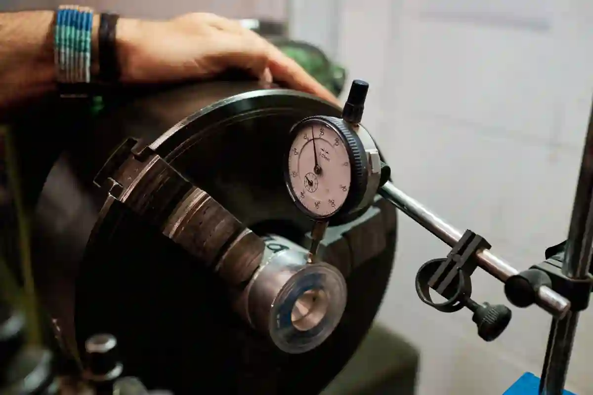
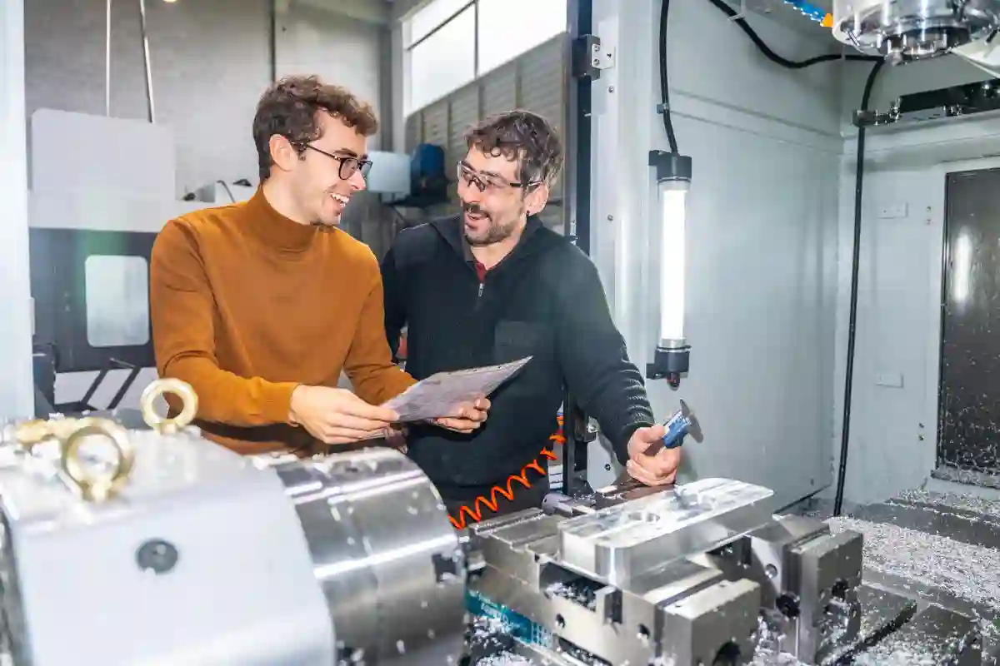

Talaşlı İmalatta Kalite Kontrol Nasıl Yapılır?
Talaşlı imalatta kalite kontrol, üretilen parçanın yalnızca ölçüsel doğruluğunu değil; fonksiyonel uyumunu, tekrarlanabilirliğini ve kullanım ömrünü de güvence altına alan kritik bir üretim disiplinidir. CNC tezgâhlarında gerçekleştirilen her işlem, belirli tolerans aralıkları içinde kalmak zorundadır ve bu toleransların doğrulanması sistematik bir kontrol süreci gerektirir.
Modern üretim ortamlarında kalite, yalnızca üretim sonunda yapılan bir denetim faaliyeti değildir. CNC kalite kontrol süreci, tasarım verisinin doğrulanmasından başlayarak, üretim esnasındaki ara kontroller ve sevkiyat öncesi nihai ölçümlerle devam eden bütüncül bir yapıya sahiptir. Bu yapı, özellikle hassas parça üretimi yapılan sektörlerde doğrudan rekabet avantajı yaratır.
Sanayi uygulamalarında kalite kontrolün etkinliği; kullanılan ölçüm ekipmanları, operatör yetkinliği, proses izleme kabiliyeti ve raporlama altyapısının doğruluğu ile belirlenir. Bu nedenle kalite kontrol, yalnızca ölçüm değil; aynı zamanda bir süreç yönetimi faaliyetidir.
Talaşlı İmalatta Kalite Kontrolün Temel Amacı ve Kapsamı
Talaşlı üretimde kalite denetiminin temel amacı, üretilen parçanın teknik resimde tanımlanan tüm geometrik, ölçüsel ve yüzeysel gereksinimleri karşıladığını doğrulamaktır. Bu doğrulama süreci, üretimin her aşamasında kontrollü ilerlemeyi zorunlu kılar.
Kalite kontrol yalnızca hatalı parçaları ayıklamak için değil; üretim sürecindeki sapmaları erken aşamada tespit ederek maliyetleri düşürmek için uygulanır. Özellikle seri üretimde, küçük bir tolerans hatasının zincirleme etkisi ciddi kayıplara yol açabilir. Bu nedenle proses içi kontrol, kalite kontrol sisteminin ayrılmaz bir parçasıdır.
Bu kapsamda kontrol faaliyetleri; ham madde giriş denetimi, ilk parça onayı, ara ölçümler ve final kalite kontrol aşamalarını kapsar. Her aşama, bir sonraki sürecin sağlıklı ilerlemesi için referans niteliği taşır.
Kalite Kontrolün Üretim Sürecindeki Stratejik Rolü
Kalite kontrol, üretim sürecinde pasif bir denetim mekanizması değil; aktif bir karar destek sistemidir. Ölçüm sonuçları, takım aşınması, tezgâh kalibrasyonu ve proses stabilitesi hakkında doğrudan veri sağlar.
Örneğin CNC işleme sırasında alınan ara ölçümler, takımın tolerans dışına çıkmaya başladığını erken aşamada gösterebilir. Bu durum, üretim durdurulmadan önce müdahale edilmesine imkân tanır ve hurda oranını ciddi şekilde azaltır.
Bu yaklaşım, özellikle talaşlı imalatta kalite kontrol süreçlerini sistematik olarak yöneten işletmelerde, üretim verimliliğini doğrudan artırır.
CNC Kalite Kontrol Süreci Nasıl Yapılandırılır?
CNC üretimde kalite denetim süreci, üretim öncesi hazırlık, üretim sırasında izleme ve üretim sonrası doğrulama olmak üzere üç ana fazdan oluşur. Bu fazlar birbirinden bağımsız değil; entegre bir kontrol zincirinin parçalarıdır.
Üretim öncesi aşamada, teknik resimlerin okunması, tolerans analizleri ve ölçüm planlarının oluşturulması gerçekleştirilir. Bu planlar, hangi ölçünün hangi aşamada ve hangi ekipmanla kontrol edileceğini netleştirir. Üretim sırasında yapılan proses içi kontrol, parça henüz tezgâhtayken kritik ölçülerin doğrulanmasını sağlar. Bu sayede hatalar birikmeden müdahale edilebilir.
Üretim tamamlandığında ise final kalite kontrol aşamasına geçilir. Bu aşama, sevkiyat öncesi son güvence katmanıdır. Bu sürecin CNC üretim ortamlarında nasıl uygulandığını daha detaylı incelemek için CNC Üretimde Kalite Kontrol Süreçleri başlıklı rehberden faydalanabilirsiniz.
Proses İçi Kontrol Neden Kritik Bir Aşamadır?
Proses esnası ölçüm ve doğrulama, üretimin durdurulmadan kalite güvencesinin sağlanmasını mümkün kılar. Parça henüz işlenirken yapılan ölçümler, tolerans sapmalarını erken aşamada ortaya çıkarır.
Bu yaklaşım, özellikle dar toleranslı parçaların üretiminde hayati öneme sahiptir. CNC tezgâhlarında sıcaklık değişimleri, takım aşınması veya bağlama hataları ölçüsel sapmalara neden olabilir. Proses içi ölçümler, bu sapmaların üretim sonunda değil, üretim esnasında yakalanmasını sağlar.
Talaşlı İmalatta Kullanılan Ölçüm Ekipmanları ve Doğru Seçim Kriterleri
Talaşlı imalatta kalite kontrol sürecinin doğruluğu, kullanılan ölçüm ekipmanlarının hassasiyeti ve uygunluğuyla doğrudan ilişkilidir. Her ölçüm cihazı, belirli bir tolerans aralığı ve kullanım senaryosu için tasarlanmıştır. Bu nedenle ekipman seçimi rastgele değil, üretim gereksinimlerine dayalı olarak yapılmalıdır.
Üretimde en sık yapılan hatalardan biri, tüm ölçümlerin tek tip cihazlarla yapılmaya çalışılmasıdır. Oysa yüzey pürüzlülüğü, doğrusal ölçü, dairesellik veya konum toleransları farklı teknikler gerektirir. CNC kalite kontrol süreci, bu farklılıkları dikkate alan bir ölçüm planı ile yapılandırılmalıdır.

Temel Ölçüm Ekipmanları ve Kullanım Alanları
Atölye ortamında kullanılan temel ölçüm ve kontrol cihazları, hızlı ve pratik kontrol ihtiyaçlarını karşılamak üzere tasarlanmıştır. Bu ekipmanlar genellikle proses içi kontrol aşamasında tercih edilir.
Kumpaslar, genel ölçü kontrollerinde yaygın olarak kullanılırken; mikrometreler daha dar toleranslı ölçümler için tercih edilir. Yükseklik mastarları, özellikle dikey ölçümlerde referans düzlem oluşturur. Komparatör saatleri ise bağlama sonrası oluşabilecek mikron seviyesindeki sapmaları tespit etmek için kullanılır.
Bu ekipmanların doğru sonuç verebilmesi için düzenli kalibrasyonları yapılmalı ve operatörler ölçüm teknikleri konusunda eğitimli olmalıdır. Aksi halde ölçüm cihazı doğru olsa bile sonuçlar hatalı olabilir.
Ölçüm Ekipmanlarının Kalibrasyon ve İzlenebilirlik Gereksinimleri
Ölçüm sonuçlarının güvenilir olması için cihazların ulusal ve uluslararası standartlara izlenebilir olması gerekir. Kalibrasyonu yapılmamış bir ekipmanla alınan ölçüm, teknik olarak geçerli kabul edilmez.
Türkiye’de ölçüm izlenebilirliği ve metroloji altyapısı konusunda resmi referans kaynağı, TÜBİTAK Ulusal Metroloji Enstitüsü kaynaklarıdır. Bu kurum, endüstriyel ölçümlerde referans standartların oluşturulmasından sorumludur.
Bu tür resmi kaynaklara dayalı bir kalibrasyon altyapısı, final kalite kontrol raporlarının müşteri nezdinde kabul edilebilirliğini artırır.
CMM Ölçüm Nedir? Hangi Durumlarda Kullanılır?
CMM ölçüm nedir sorusu, özellikle yüksek hassasiyet gerektiren parça üretimlerinde sıkça gündeme gelir. CMM (Coordinate Measuring Machine), parçanın üç boyutlu uzaydaki geometrik özelliklerini yüksek doğrulukla ölçebilen gelişmiş bir kalite kontrol sistemidir.
Bu sistemler, manuel ölçüm ekipmanlarının yetersiz kaldığı karmaşık geometrilerde devreye girer. Serbest formlu yüzeyler, konum toleransları ve profil ölçümleri, CMM cihazları ile detaylı şekilde analiz edilebilir.
CMM ölçümleri genellikle nihai kalite denetimi aşamasında kullanılır; ancak kritik parçalarda ilk parça onayı sırasında da tercih edilir.

CMM Ölçümün Sağladığı Teknik Avantajlar
CMM sistemlerinin en büyük avantajı, ölçüm sonuçlarının dijital olarak raporlanabilmesidir. Bu raporlar, müşteri onay süreçlerinde ve izlenebilirlik dokümantasyonunda önemli rol oynar.
Ayrıca CMM ölçümleri, insan kaynaklı ölçüm hatalarını minimize eder. Otomatik prob sistemleri sayesinde ölçüm tekrarlanabilirliği yüksektir. Bu durum, talaşlı imalatta kalite kontrol süreçlerinin standardize edilmesine katkı sağlar.
Proses İçi Kontrol ile Final Kalite Kontrol Arasındaki Farklar
Üretim sırasında kalite kontrol, üretim devam ederken yapılan ara ölçümleri kapsar. Amaç, hatayı üretimin başında tespit ederek maliyetli düzeltmelerin önüne geçmektir.
Buna karşılık final kalite kontrol, üretimi tamamlanan parçanın sevkiyat öncesi son kez doğrulanmasıdır. Bu aşamada ölçüm kapsamı daha geniştir ve raporlama zorunluluğu bulunur.
Bu iki kontrol yaklaşımı birbirinin alternatifi değil; tamamlayıcısıdır. Etkin bir kalite yönetim sistemi, her iki aşamayı da planlı şekilde uygular. Proses ve final kontrollerin satın alma kararlarına etkisini görmek için CNC İmalatta Kalite Kontrol Satın Alma Sürecini Nasıl Etkiler? başlıklı içeriği inceleyebilirsiniz.
Final Kalite Kontrol Aşaması Nasıl Yürütülür?
Talaşlı imalatta kalite kontrol sürecinin son ve en kritik halkası final kalite kontrol aşamasıdır. Bu aşama, üretimi tamamlanan parçanın sevkiyat öncesi tüm teknik gereklilikleri eksiksiz karşıladığının doğrulandığı noktadır. Final kontrol, yalnızca ölçüm yapmak değil; ölçüm sonuçlarını teknik resim, tolerans tabloları ve müşteri şartnameleriyle birebir karşılaştırmaktır.
Üretim sonrası kalite doğrulama, üretimden bağımsız bir bakış açısıyla yürütülmelidir. Bu nedenle birçok profesyonel üretim tesisinde final kontroller, üretim operatörlerinden farklı bir kalite birimi tarafından gerçekleştirilir. Böylece ölçüm tarafsızlığı ve rapor güvenilirliği sağlanır.
Bu aşamada ölçüm kapsamı, proses içi kontrol aşamasına kıyasla daha geniştir. Parçanın tüm kritik ölçüleri, geometrik toleransları ve yüzey özellikleri değerlendirilir.
Final Kalite Kontrolde Kontrol Edilen Başlıca Parametreler
Final ölçüm ve raporlama sırasında aşağıdaki parametreler sistematik olarak incelenir:
- Ölçüsel toleranslar (uzunluk, çap, derinlik)
- Geometrik toleranslar (diklik, paralellik, konum)
- Yüzey pürüzlülüğü ve görsel kalite
- Montaj uyumu ve fonksiyonel kontrol
Bu parametrelerin her biri, teknik resimde belirtilen tolerans değerlerine göre değerlendirilir. Özellikle dar toleranslı parçalarda, manuel ölçüm ekipmanları yeterli olmayabilir ve CMM ölçüm sistemleri devreye girer.
Kalite Kontrol Ölçüm Raporları Nasıl Hazırlanır?
Kalite kontrolün teknik değeri, ölçüm kadar raporlama kalitesiyle de belirlenir. Doğru hazırlanmamış bir ölçüm raporu, doğru ölçüm yapılmış olsa bile müşteri tarafından kabul edilmeyebilir.
CNC kalite kontrol süreci kapsamında hazırlanan ölçüm raporları; izlenebilir, anlaşılır ve teknik olarak doğrulanabilir olmalıdır. Raporda yer alan her ölçü, kullanılan ekipman ve referans standart açıkça belirtilmelidir.
Ölçüm raporları genellikle şu bilgileri içerir:
- Parça kodu ve revizyon bilgisi
- Ölçülen özelliklerin listesi
- Nominal ölçü ve tolerans aralığı
- Ölçülen gerçek değer
- Uygunluk durumu (OK / NOK)
CMM Ölçüm Raporlarının Avantajları
CMM ölçüm nedir sorusunun pratikteki karşılığı, raporlama tarafında net şekilde görülür. CMM sistemleriyle yapılan ölçümler, otomatik olarak dijital raporlara dönüştürülebilir.
Bu raporlar;
- İnsan hatasını minimize eder
- Tekrarlanabilirliği artırır
- Müşteri denetimlerinde güven oluşturur
Bu nedenle özellikle savunma, otomotiv ve medikal sektörlerine yönelik üretimlerde CMM raporları standart bir gereklilik haline gelmiştir. Türkiye’de geometrik toleranslar ve ölçüm standartları konusunda referans alınabilecek standartlardan biri, TS EN ISO 286-1’dir. Bu standart, boyut toleranslarının (en büyük/en küçük ölçüler arası fark) nasıl belirleneceğini ve teknik resimlerde nasıl gösterileceğini açıklar. Bu tür uluslararası kabul görmüş standartlar, teknik resim ve toleranslandırma uygulamalarında temel başvuru kaynağıdır.
Dokümantasyon ve İzlenebilirlik Neden Önemlidir?
Kalite kontrol yalnızca ölçüm anıyla sınırlı değildir. Ölçüm sonuçlarının kayıt altına alınması ve gerektiğinde geriye dönük izlenebilmesi, profesyonel üretim anlayışının temel göstergelerinden biridir.
Dokümantasyon; parça geçmişinin, ölçüm koşullarının ve kullanılan ekipmanların şeffaf biçimde izlenmesini sağlar. Bu sayede herhangi bir uygunsuzluk durumunda, hatanın hangi aşamada oluştuğu net şekilde analiz edilebilir.
Özellikle seri üretimde, izlenebilirlik olmayan bir kalite kontrol sistemi sürdürülebilir değildir. Bu nedenle talaşlı imalatta kalite kontrol süreçleri mutlaka kayıt temelli yürütülmelidir. Kalite kontrol altyapısının hizmet tarafında nasıl yapılandırıldığını görmek için Kalite Kontrol ve Ölçüm sayfasını inceleyebilirsiniz.
Gerçek Üretim Ortamlarında Kalite Kontrol Uygulamaları
Talaşlı imalatta kalite kontrol, teorik bir denetim yaklaşımından ziyade, gerçek üretim koşullarında süreklilik ve disiplin gerektiren bir uygulama bütünüdür. Atölye ortamında; sıcaklık dalgalanmaları, takım aşınması, bağlama varyasyonları ve operatör farklılıkları kalite sonuçlarını doğrudan etkiler. Bu nedenle kalite kontrol, üretim sahasına entegre edilmelidir.
Gerçek üretim senaryolarında en etkili yaklaşım; kritik ölçülerin tanımlanması, bu ölçülere özel proses içi kontrol planlarının oluşturulması ve sonuçların anlık izlenmesidir. Böylece sapmalar büyümeden müdahale edilir ve final kalite kontrol aşamasında sürprizlerle karşılaşılmaz.
Atölye Koşullarında Ölçüm Güvenilirliğini Artırma Yöntemleri
Atölye koşullarında ölçüm güvenilirliği için aşağıdaki uygulamalar kritik öneme sahiptir:
- Ölçüm öncesi parça ve ekipmanın ortam sıcaklığına adaptasyonu
- Ölçüm cihazlarının düzenli kalibrasyonu ve temizliği
- Operatörlerin ölçüm teknikleri konusunda standartlaştırılması
- Kritik ölçüler için çift doğrulama yöntemi
Bu uygulamalar, cnc kalite kontrol süreci içerisinde ölçüm sapmalarını minimize eder ve rapor güvenilirliğini artırır.
Hataların Kök Neden Analizi ve Önleyici Faaliyetler
Kalite kontrol sürecinde tespit edilen her uygunsuzluk, yalnızca bir sonuçtur. Asıl önemli olan, bu sonucun neden oluştuğunu doğru şekilde analiz edebilmektir. Kök neden analizi, hatayı değil; hataya yol açan süreci hedef alır.
Talaşlı imalatta yaygın kök nedenler arasında takım aşınması, yanlış bağlama, eksik proses planlaması ve ölçüm hataları yer alır. Bu nedenler sistematik olarak analiz edilmeden yapılan düzeltmeler, geçici çözümler üretir.
Kök Neden Analizi Sonrası Alınabilecek Aksiyonlar
Etkili bir analiz sonrası aşağıdaki önleyici aksiyonlar devreye alınır:
- Proses parametrelerinin revize edilmesi
- Takım değişim periyotlarının yeniden tanımlanması
- Ölçüm planlarının güncellenmesi
- Operatör eğitimlerinin güçlendirilmesi
Bu aksiyonlar, talaşlı imalatta kalite kontrol süreçlerinin sürdürülebilirliğini sağlar ve tekrarlayan hataların önüne geçer.
Üretim Altyapısı ile Kalite Yönetiminin Entegrasyonu
Kalite kontrol, üretimden ayrı bir departman olarak konumlandırıldığında etkinliği sınırlı kalır. Oysa modern üretim anlayışında kalite, üretimin doğal bir parçasıdır. Bu nedenle kalite yönetimi; CNC tezgâhları, ölçüm ekipmanları ve dijital raporlama sistemleriyle entegre çalışmalıdır.
Üretim altyapısıyla entegre bir kalite sistemi, anlık veri üretir ve karar alma süreçlerini hızlandırır. Ölçüm sonuçlarının dijital ortama aktarılması, geçmiş verilerle karşılaştırma yapılmasını ve proses performansının izlenmesini mümkün kılar.
Dijital Kayıt ve Süreç Takibinin Katkıları
Dijital kayıt sistemleri sayesinde;
- Ölçüm sonuçları anlık izlenir
- Sapma trendleri erken fark edilir
- Denetim süreçleri hızlanır
- Müşteri taleplerine hızlı yanıt verilir
Bu yapı, final kalite kontrol raporlarının sadece bir çıktı değil, stratejik bir yönetim aracına dönüşmesini sağlar.
Talaşlı İmalatta Kalite Kontrolün Rekabet Avantajına Etkisi
Talaşlı imalatta kalite kontrol, yalnızca teknik bir zorunluluk değil; doğrudan rekabet avantajı yaratan stratejik bir üretim unsurudur. Günümüzde müşteriler, yalnızca parça tedarikçisi değil; süreci yönetebilen, ölçebilen ve doğrulayabilen üretim partnerleriyle çalışmayı tercih etmektedir.
Özellikle dar toleranslı ve fonksiyonel parçaların üretildiği sektörlerde, kalite kontrol altyapısı zayıf olan firmalar fiyat avantajı sunsa dahi sürdürülebilir bir tedarikçi olarak konumlanamaz. Buna karşılık; cnc kalite kontrol süreci planlı, izlenebilir ve raporlanabilir şekilde yürütülen işletmeler, uzun vadeli iş birlikleri kurar.
Kalite kontrol, hata oranını düşürmenin ötesinde; teslim sürelerinin kısalmasını, revizyon maliyetlerinin azalmasını ve müşteri güveninin artmasını sağlar. Bu kazanımlar, doğrudan marka algısına ve pazar payına yansır.
Kalite Kontrol Olgunluğu Yüksek Firmaların Öne Çıkan Özellikleri
Kalite kontrol olgunluğu yüksek olan üretim firmalarında şu özellikler net biçimde gözlemlenir:
- Ölçüm planları üretim öncesinde tanımlanmıştır
- Ölçüm ekipmanları proses gereksinimlerine göre seçilmiştir
- Proses içi kontrol standart bir uygulamadır
- Final kalite kontrol raporları müşteri beklentilerine uygundur
- Ölçüm sonuçları geriye dönük izlenebilir durumdadır
Bu yapı, kalite kontrolün yalnızca bir kontrol noktası değil; üretimin ayrılmaz bir parçası olarak ele alındığını gösterir.
Talaşlı İmalatta Kalite Kontrol Süreçlerinin Sürdürülebilirliği
Kalite kontrol süreçlerinin sürdürülebilir olması, tek seferlik iyileştirmelerle değil; sistematik yaklaşım ve kurumsal disiplinle mümkündür. Ölçüm ekipmanlarının düzenli kalibrasyonu, personel yetkinliğinin korunması ve ölçüm verilerinin analiz edilmesi bu sürdürülebilirliğin temelini oluşturur.
Özellikle cmm ölçüm nedir sorusuna yatırım perspektifiyle yaklaşan firmalar, CMM sistemlerini yalnızca ölçüm aracı olarak değil; proses geliştirme aracı olarak konumlandırır. Bu sayede ölçüm verileri, gelecekteki üretim kararlarını destekleyen bir veri havuzuna dönüşür.
Kalite kontrolün sürdürülebilirliği, üretim hacmi arttıkça daha da kritik hale gelir. Seri üretimde küçük bir sapma, kısa sürede büyük kayıplara yol açabileceğinden, kalite kontrol sistemi ölçeklenebilir olmalıdır.
Üretim Deneyimine Dayalı Kalite Yönetimi Yaklaşımı
Sahada edinilen üretim deneyimi, teorik kalite yönetimi bilgilerinin ötesinde bir değer sunar. Gerçek üretim ortamlarında, her parça ve her proses farklı dinamikler barındırır. Bu nedenle kalite kontrol sistemleri, sahadan beslenen canlı yapılar olmalıdır.
Tecrübeye dayalı yaklaşım; hangi ölçünün kritik olduğunu, hangi aşamada kontrol edilmesi gerektiğini ve hangi ekipmanın daha doğru sonuç verdiğini zamanla netleştirir. Bu bilgi birikimi, talaşlı imalatta kalite kontrol süreçlerinin olgunlaşmasını sağlar. Talaşlı imalat süreçlerinin tümünü kapsayan teknik içeriklere ulaşmak için Talaşlı İmalat Blog merkez sayfasını inceleyebilirsiniz.
Sonuç – Talaşlı İmalatta Kalite Kontrol Neden Vazgeçilmezdir?
Talaşlı üretimde kalite denetimi, ölçüm cihazlarından veya raporlardan ibaret değildir. Bu süreç; üretim kültürünü, teknik disiplini ve müşteriyle kurulan güven ilişkisinin temelini oluşturur. Etkin bir kalite kontrol sistemi, hatayı yakalayan değil; hatanın oluşmasını engelleyen bir yapıya sahiptir. Üretim öncesinden başlayan planlama, proses içi kontrol ile devam eden izleme ve final kalite kontrol ile tamamlanan doğrulama zinciri; kaliteli üretimin olmazsa olmazıdır. Bu zincirin herhangi bir halkasında yaşanan zayıflık, tüm üretim sürecini riske atar.
Talaşlı imalat süreçlerinde kalite kontrolün ihmal edilmesi, kısa vadede üretim hızını artırıyor gibi görünse de uzun vadede ciddi maliyet ve itibar kayıplarına yol açar. Ölçüm, doğrulama ve raporlama adımlarının sistematik şekilde uygulanması; hatalı üretimin, iade risklerinin ve müşteri memnuniyetsizliğinin önüne geçer. Bu nedenle kalite kontrol, üretimin sonunda yapılan bir kontrol değil, sürecin her aşamasına entegre edilmesi gereken temel bir üretim disiplinidir.
Sonuç olarak; kalite kontrolü bir maliyet unsuru olarak değil, stratejik bir yatırım olarak ele alan firmalar, rekabetin yoğun olduğu talaşlı imalat sektöründe kalıcı başarı elde eder.